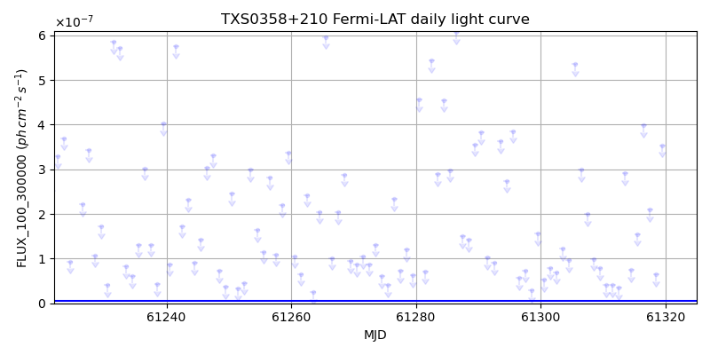
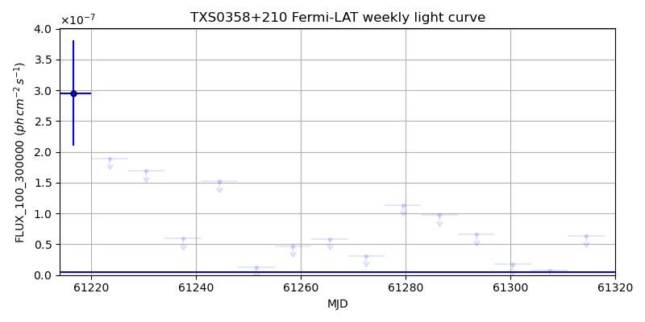
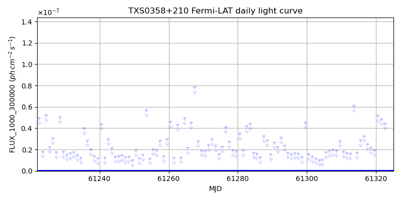
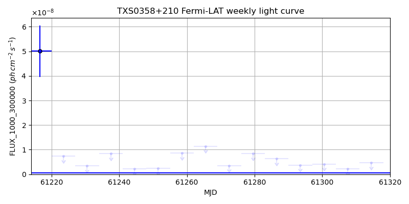

LAT Lightcurve site: https://fermi.gsfc.nasa.gov/ssc/data/access/lat/msl_lc/source/TXS_0358p210
NED: Query
Time of last update of this page: UT: 2026-10-10 15:14 (MJD: 61323.635)
| Property | Value |
|---|---|
| R.A. | 4:01:45.12 |
| Dec. | 21:10:30.0 |
| z | 0.834 |
| 3FGL SpectrumType | PowerLaw |
| 3FGL PL Index | 2.35 |
| 3FGL Flux_100_300000 | 1.12e-08 1 / (s cm2) |
| 3FGL Flux_1000_300000 | 4.97e-10 1 / (s cm2) |
| 3FGL Flux >200 GeV | 3.85e-13 1 / (s cm2) |
| 3FGL Extrap. Crab >200 GeV | 0.00 |
| 3FGL Flux After EBL Absorption >200GeV | 1.24e-14 1 / (s cm2) |
| 3FGL EBL Crab Fraction >200GeV | 0.00 |

| MJD | dMJD | Flux | dFlux | Frac3FGL | FracCrab>200GeV | EBLFracCrab>200GeV |
|---|---|---|---|---|---|---|
| 61318.50 | 0.50 | 6.42e-08 | 0.00e+00 | 0.00 | 0.00 | 0.00 |
| 61319.50 | 0.50 | 3.54e-07 | 0.00e+00 | 0.00 | 0.00 | 0.00 |
| 61320.50 | 0.50 | 6.61e-07 | 0.00e+00 | 0.00 | 0.00 | 0.00 |
| 61321.50 | 0.50 | 8.31e-07 | 0.00e+00 | 0.00 | 0.00 | 0.00 |
| 61322.50 | 0.50 | 8.40e-07 | 0.00e+00 | 0.00 | 0.00 | 0.00 |

| MJD | dMJD | Flux | dFlux | Frac3FGL | FracCrab>200GeV | EBLFracCrab>200GeV |
|---|---|---|---|---|---|---|
| 61286.50 | 3.50 | 9.78e-08 | 0.00e+00 | 0.00 | 0.00 | 0.00 |
| 61293.50 | 3.50 | 6.57e-08 | 0.00e+00 | 0.00 | 0.00 | 0.00 |
| 61300.50 | 3.50 | 1.76e-08 | 0.00e+00 | 0.00 | 0.00 | 0.00 |
| 61307.50 | 3.50 | 6.89e-09 | 0.00e+00 | 0.00 | 0.00 | 0.00 |
| 61314.50 | 3.50 | 6.36e-08 | 0.00e+00 | 0.00 | 0.00 | 0.00 |

| MJD | dMJD | Flux | dFlux | Frac3FGL | FracCrab>200GeV | EBLFracCrab>200GeV |
|---|---|---|---|---|---|---|
| 61318.50 | 0.50 | 2.18e-08 | 0.00e+00 | 0.00 | 0.00 | 0.00 |
| 61319.50 | 0.50 | 1.94e-08 | 0.00e+00 | 0.00 | 0.00 | 0.00 |
| 61320.50 | 0.50 | 5.19e-08 | 0.00e+00 | 0.00 | 0.00 | 0.00 |
| 61321.50 | 0.50 | 4.88e-08 | 0.00e+00 | 0.00 | 0.00 | 0.00 |
| 61322.50 | 0.50 | 4.46e-08 | 0.00e+00 | 0.00 | 0.00 | 0.00 |

| MJD | dMJD | Flux | dFlux | Frac3FGL | FracCrab>200GeV | EBLFracCrab>200GeV |
|---|---|---|---|---|---|---|
| 61286.50 | 3.50 | 6.32e-09 | 0.00e+00 | 0.00 | 0.00 | 0.00 |
| 61293.50 | 3.50 | 3.73e-09 | 0.00e+00 | 0.00 | 0.00 | 0.00 |
| 61300.50 | 3.50 | 4.16e-09 | 0.00e+00 | 0.00 | 0.00 | 0.00 |
| 61307.50 | 3.50 | 2.25e-09 | 0.00e+00 | 0.00 | 0.00 | 0.00 |
| 61314.50 | 3.50 | 4.68e-09 | 0.00e+00 | 0.00 | 0.00 | 0.00 |
--------------------------------------------------------- Using user-supplied coords: 4:01:45.12 21:10:30.0 2000 --------------------------------------------------------- FLWO UT night of: 2026-10-11 Local Sid. @ Midnight: 00:55 Sunset (-15.0) (local, UT): 19:04 02:04 Sunrise (-15.0) (local, UT): 05:18 12:18 Moonrise (local, UT): Moonset (local, UT): Moon phase: 0.01 --------------------------------------------------------- AzTime LSID UT Obj_el Obj_az Mn_el Mn_az Sep. --------------------------------------------------------- 19:04 19:58 02:04 -12.7 54.9 -16.1 264.2 139.2 19:34 20:29 02:34 -7.3 59.4 -22.3 267.8 139.4 20:04 20:59 03:04 -0.9 63.6 -28.5 271.5 139.7 20:34 21:29 03:34 4.3 67.5 -34.7 275.4 140.0 21:04 21:59 04:04 10.2 71.2 -40.8 279.7 140.4 21:34 22:29 04:34 16.3 74.7 -46.8 284.6 140.7 22:04 22:59 05:04 22.5 78.1 -52.7 290.5 141.0 22:34 23:29 05:34 28.8 81.6 -58.4 297.7 141.4 23:04 23:59 06:04 35.2 85.0 -63.6 307.3 141.7 23:34 00:29 06:34 41.6 88.7 -68.1 320.3 142.1 00:04 00:59 07:04 48.0 92.8 -71.3 338.2 142.4 00:34 01:29 07:34 54.3 97.4 -72.6 0.4 142.8 01:04 01:59 08:04 60.6 103.2 -71.5 22.7 143.1 01:34 02:30 08:34 66.7 110.9 -68.3 40.8 143.5 02:04 03:00 09:04 72.5 122.6 -63.9 54.1 143.9 02:34 03:30 09:34 77.2 142.6 -58.7 63.8 144.2 03:04 04:00 10:04 79.6 176.1 -53.1 71.2 144.6 03:34 04:30 10:34 78.0 211.7 -47.3 77.2 144.9 04:04 05:00 11:04 73.5 234.2 -41.4 82.2 145.2 04:34 05:30 11:34 67.9 247.1 -35.3 86.6 145.6 05:04 06:00 12:04 61.9 255.5 -29.2 90.6 145.9 05:18 06:14 12:18 59.1 258.4 -26.5 92.4 146.0 --------------------------------------------------------- Dark hours >55 deg.: 4.67 srcstart (UT): 2026-10-11 07:37 srcend (UT): 2026-10-11 12:17